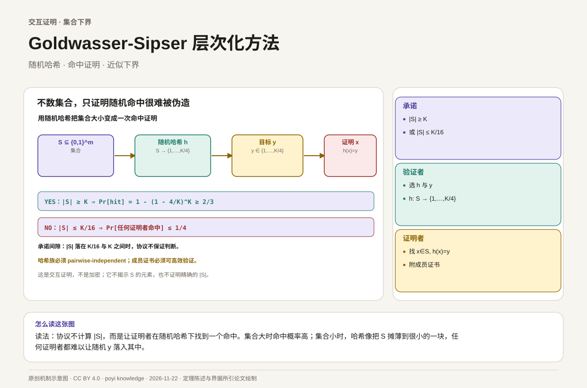
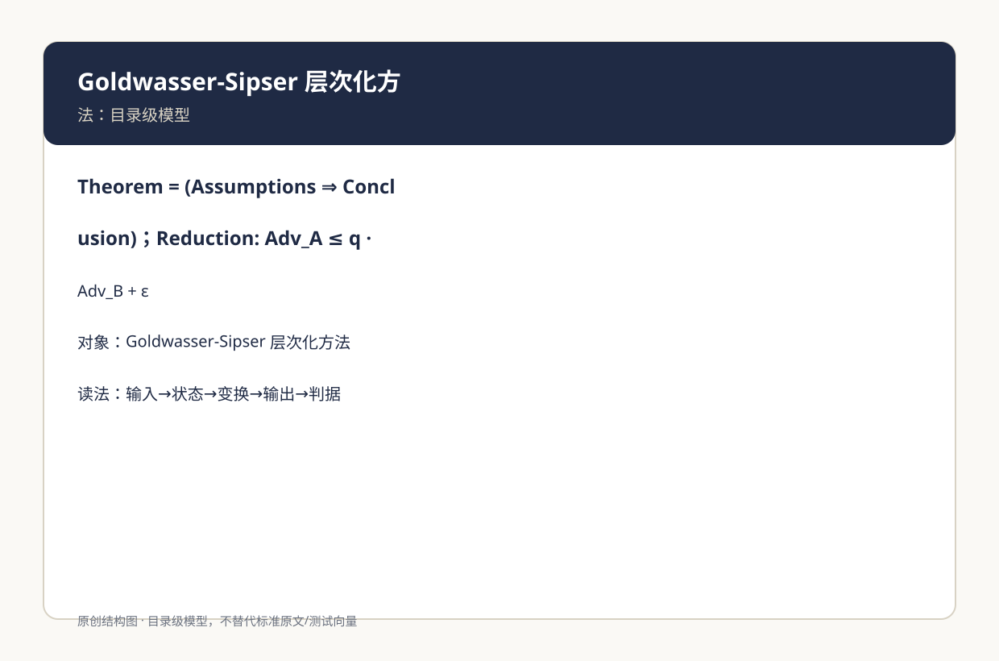

原理与机制
定理：Goldwasser-Sipser 层次化方法（Goldwasser-Sipser Ladder）。### 集合下界的承诺问题
设 S ⊆ {0,1}^m，成员资格可以被高效证明。验证者知道参数 K，要在两种情形间区分：|S| ≥ K（YES）与 |S| ≤ K/16（NO）。协议不计算 |S|，只用随机哈希让证明者证明“集合足够大”。目录把这条命名为“层次化方法”，这里按它的可执行机制——Goldwasser–Sipser 集合下界协议——展开。### 一轮公开硬币协议
验证者从 pairwise-independent 哈希族 H_{m,k} 中选 h: {0,1}^m → {1,…,K/4}，并从同样范围中均匀选 y，把 (h,y) 发给证明者。证明者找一个 x∈S 使 h(x)=y，附上 x∈S 的成员证书；验证者检查证书与哈希命中。### 完备性与可靠性
若 |S| ≥ K，随机 y 被 S 命中的概率为
1 - (1 - 4/K)^K ≥ 2/3。若 |S| ≤ K/16，则 h(S) 最多覆盖哈希空间的 (K/16)/(K/4) = 1/4，任何证明者让随机 y 命中的概率不超过 1/4。协议因此是一个公开硬币的近似下界证明：它不给出 |S| 的精确值，只以 2/3 对 1/4 的间隙区分“足够大”和“小得多”。

为什么重要
精确计算 |S| 可能是 #P 难的；但很多协议只需要区分“足够大”和“小一半”。哈希命中把基数比较变成一次成员证明，验证者不需要枚举 S。### 教材版本的参数
Arora 与 Barak 的教材把原论文的引理简化为一个哈希、一个随机 y 和 K/16 的承诺间隙：哈希范围取 K/4，集合大时命中概率至少 2/3，集合小时任何证明者成功率不超过 1/4。原论文则用 l 个随机线性哈希和 l² 个目标串放大命中概率，并证明 IP[k] ⊆ AM[k+2]。### 对密码协议的含义
集合下界协议本身不是加密方案，但它展示了“用随机哈希压缩基数信息”的范式；集合成员证明、近似计数和隐私集合求交里可以看到同类的哈希/承诺结构。
应用与实例
1.双方约定 K 与哈希范围 R = K/4；验证者选 pairwise-independent h 和随机 y。2.证明者找 x∈S 满足 h(x)=y，并给出成员证书。3.验证者验证证书和命中；接受则说明 S 很可能 ≥ K。4.需要更高置信度时，独立重复；错误率按轮数指数下降。5.记录哈希族、范围、重复次数和成员证书的验证方式。### 典型用法
GNI 的 AM 协议、IP=AM 的模拟、近似计数、集合大小下界、交互式证明的教学与协议设计。

边界与攻击面
1.没有 K/16 的承诺间隙：|S| 落在 K/16 与 K 之间时，协议不保证正确判断。2.成员资格不可高效证明：证明者无法给出 x∈S 的证书。3.哈希族不是 pairwise-independent 或随机性可预测：完备性/可靠性证明失效。4.验证者重复使用同一 y 或 h：证明者可以预计算命中。5.证明者无界但验证者实现有漏洞：协议证明的是交互证明，不是实现安全。6.把“集合大”误读为“集合内容已知”：协议不揭示 S 的元素。GS 协议是交互证明，不是加密或签名；它不提供零知识，也不证明 |S| 的精确值。2/3 与 1/4 是常见参数，不是唯一选择。
历史与背景
Goldwasser 与 Sipser 在 STOC 1986 的论文中证明私有硬币交互证明与公开硬币 Arthur–Merlin 证明在语言识别上等价。证明的关键工具是近似下界引理：用 Carter–Wegman 通用哈希把集合大小的下界转成命中概率。### 从引理到协议
原论文用 l 个随机线性哈希和 l² 个目标串放大命中概率，并由此得到 IP[k] ⊆ AM[k+2]。后来的教材把它简化为一个哈希、一个随机 y 和 K/16 的间隙，形成今天常见的集合下界协议版本。### 今天的位置
集合下界协议仍是交互证明与计数复杂性的基础组件；在密码学里，它更多作为“随机哈希压缩基数信息”的方法论，而不是直接部署的协议。
逐步示例与核验
形式模型与复算步骤
[\Pr[\mathrm{Bad}_A(\lambda)]\le \varepsilon(\lambda)]
Goldwasser-Sipser 层次化方法的公开参数、密钥/随机数与消息；变量说明：Bad 为归约中定义的失败事件，ε 为可忽略函数。1.定义失败事件。2.构造归约把攻击者转成困难问题求解器。3.证明失败概率上界。边界：公式只覆盖已登记的参数与假设；参数取值、标准版本和实现细节仍以来源为准。
参考出处
- Wikipedia search entry for Goldwasser-Sipser 层次化方法. https://zh.wikipedia.org/w/index.php?search=Goldwasser-Sipser%20%E5%B1%82%E6%AC%A1%E5%8C%96%E6%96%B9%E6%B3%95
- Handbook of Applied Cryptography (Menezes, van Oorschot, Vanstone). https://www.cacr.math.uwaterloo.ca/hac/